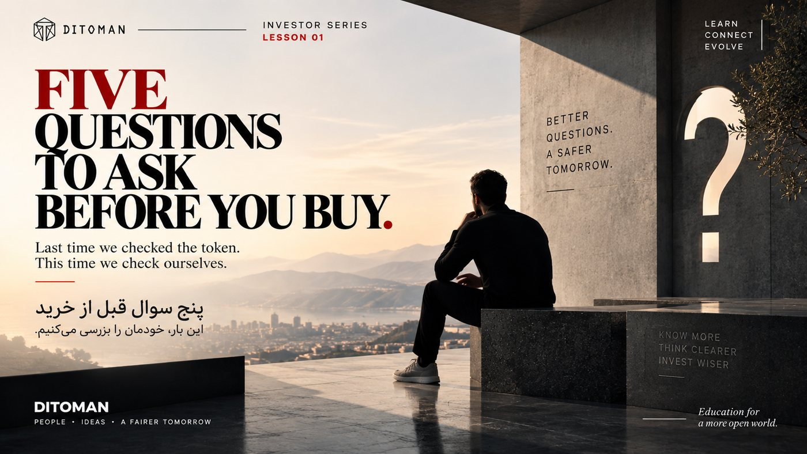

Five Questions to Ask Before You Buy
پنج پرسش پیش از خرید
The last lesson was about checking the token. This one is about checking yourself.
درس قبل دربارهی بررسی توکن بود. این درس دربارهی بررسی خودمان است.
Lesson Content
محتوای درس
Read the lesson in English or Persian. This structure is designed for future quiz, score, reputation, and reward systems.
درس را به فارسی یا انگلیسی بخوانید. این ساختار برای آزمونک، امتیاز، اعتبار و پاداشهایی طراحی شده که در آینده اضافه میشوند.
In the last lesson we looked at how to check a token: is the contract verified, who holds the supply, can new tokens be created, are there hidden restrictions, is there real liquidity.
A token can pass every one of those checks and still be a bad decision for you.
That is because the checks tell you about the token. They tell you nothing about your reasoning, your timing, or what you can afford to lose. These five questions do.
01. What am I actually buying?
Not the name. Not the logo. What does this project do, and what would it need to achieve for the token to matter?
If you cannot explain it in two or three plain sentences to someone who knows nothing about crypto, you do not understand it yet. That is not a reason for shame. It is a reason to wait.
Most losses do not come from complicated mistakes. They come from buying something nobody involved could clearly describe.
02. Why do I think this will be worth more later?
There is a real answer to this question and there is a false one.
A real answer points at something specific: more people using it, a problem it solves, a supply that cannot grow, a network that gets stronger as it grows.
A false answer points at the price itself: it went up last week, someone said it will keep going, everyone is talking about it. That is not a reason. That is an observation about other people's behaviour, and other people can stop at any time.
03. What would show me I was wrong?
This is the question almost nobody asks, and it is the most valuable one here.
Decide in advance what would tell you the idea did not work. A promise not delivered. A team that goes silent. A use that never appears. Write it down before you buy, while you are still thinking clearly.
Without this, every fall in price becomes something to explain away rather than something to learn from. People do not usually lose everything in one decision. They lose it by refusing to accept a series of small signals.
04. Can I afford to lose this completely?
Not "would it hurt". Can your life continue as normal if this amount goes to zero and never comes back.
This matters more for people whose currency is already unstable, because the temptation is stronger and the cushion is thinner. If money you need for rent, food, medicine, or family is in a token, you are not investing. You are exposed.
The size of your position decides how you will behave under pressure. Too large, and fear will make your decisions for you.
05. Am I buying because I understand it, or because I am afraid of missing it?
Be honest, because only you will know the answer.
Urgency is the most reliable warning sign in this entire field. Real opportunities do not usually disappear in the next ten minutes. Anything designed to make you act before you think, whether it is a countdown, a crowd, or a friend who is certain, deserves more suspicion rather than less.
If the reason you are buying today is that you are afraid of how you will feel tomorrow, that is not analysis. That is pressure.
The point of all five
None of these questions will tell you which token succeeds. Nothing does that, and anyone who claims otherwise is selling something.
What they do is make sure the decision is actually yours: understood, sized properly, and made with a clear idea of what being wrong would look like.
Check the token. Then check yourself.
در درس قبل بررسی کردیم که چطور یک توکن را وارسی کنیم: آیا قرارداد تأیید شده، چه کسی عرضه را در اختیار دارد، آیا میتوان توکن جدید ساخت، آیا محدودیت پنهانی وجود دارد، و آیا نقدشوندگی واقعی هست.
یک توکن میتواند همه این بررسیها را پشت سر بگذارد و باز هم برای شما تصمیم درستی نباشد.
چون آن بررسیها درباره توکن هستند. درباره استدلال شما، زمانبندی شما، و اینکه چقدر توان از دست دادن دارید چیزی نمیگویند. این پنج پرسش میگویند.
۰۱. دقیقاً چه چیزی میخرم؟
نه نام. نه لوگو. این پروژه چه کاری انجام میدهد و برای اینکه توکنش ارزش داشته باشد، باید به چه چیزی برسد؟
اگر نمیتوانید در دو سه جمله ساده برای کسی که هیچ چیز از کریپتو نمیداند توضیحش دهید، هنوز آن را نفهمیدهاید. این چیز بدی نیست. فقط دلیلی است برای صبر کردن.
بیشتر ضررها از اشتباههای پیچیده نمیآید. از خریدن چیزی میآید که هیچکس نمیتوانست آن را روشن توصیف کند.
۰۲. چرا فکر میکنم بعداً ارزش بیشتری خواهد داشت؟
برای این پرسش یک پاسخ واقعی وجود دارد و یک پاسخ ساختگی.
پاسخ واقعی به چیزی مشخص اشاره میکند: استفاده بیشتر مردم، مسئلهای که حل میکند، عرضهای که نمیتواند رشد کند، شبکهای که با بزرگتر شدن قویتر میشود.
پاسخ ساختگی به خود قیمت اشاره میکند: هفته پیش بالا رفت، کسی گفت ادامه پیدا میکند، همه دربارهاش حرف میزنند. این دلیل نیست. این فقط مشاهده رفتار دیگران است، و دیگران هر لحظه میتوانند متوقف شوند.
۰۳. چه چیزی نشان میدهد که اشتباه کردهام؟
این پرسشی است که تقریباً هیچکس نمیپرسد، و ارزشمندترین پرسش این فهرست است.
از پیش مشخص کنید چه چیزی به شما میگوید این ایده جواب نداده است. وعدهای که عملی نشد. تیمی که ساکت شد. کاربردی که هرگز نیامد. پیش از خرید بنویسیدش، وقتی هنوز ذهنتان روشن است.
بدون این کار، هر افت قیمت به چیزی تبدیل میشود که باید توجیه شود، نه چیزی که باید از آن آموخت. مردم معمولاً با یک تصمیم همه چیز را از دست نمیدهند. با نپذیرفتن مجموعهای از نشانههای کوچک از دست میدهند.
۰۴. آیا توان از دست دادن کاملش را دارم؟
نه اینکه «آیا اذیت میشوم». آیا اگر این مبلغ صفر شود و هرگز برنگردد، زندگیتان مثل قبل ادامه پیدا میکند؟
این موضوع برای کسانی که پول ملیشان از پیش بیثبات است اهمیت بیشتری دارد، چون وسوسه بزرگتر و حاشیه امن کمتر است. اگر پولی که برای اجاره، غذا، دارو یا خانواده لازم دارید در یک توکن باشد، شما سرمایهگذاری نمیکنید. در معرض خطر هستید.
اندازه موقعیت شما تعیین میکند در شرایط سخت چطور رفتار کنید. اگر بیش از اندازه باشد، ترس به جای شما تصمیم میگیرد.
۰۵. به خاطر فهمیدن میخرم یا از ترس جا ماندن؟
صادق باشید، چون فقط خودتان پاسخ را میدانید.
عجله مطمئنترین نشانه هشدار در تمام این حوزه است. فرصتهای واقعی معمولاً در ده دقیقه آینده ناپدید نمیشوند. هر چیزی که طراحی شده تا شما پیش از فکر کردن اقدام کنید — یک شمارش معکوس، یک جمعیت، یا دوستی که خیلی مطمئن است — سزاوار تردید بیشتر است، نه کمتر.
اگر دلیل خرید امروزتان ترس از احساس فردایتان است، این تحلیل نیست. این عجله است.
هدف هر پنج پرسش
هیچکدام از این پرسشها به شما نمیگوید کدام توکن موفق میشود. هیچ چیز چنین کاری نمیکند، و هر کس ادعای خلافش را دارد چیزی برای فروش دارد.
کاری که میکنند این است که مطمئن شوند تصمیم واقعاً مال شماست: فهمیده شده، به اندازه درست، و با تصویری روشن از اینکه اشتباه بودن چه شکلی است.
توکن را بررسی کنید. بعد خودتان را.
The Same Rule Applies Here
همین قاعده دربارهی ما هم صدق میکند
These questions apply to TMN exactly as they apply to any other token. We would rather you understood what Ditoman is building and decided slowly than acted quickly on enthusiasm.
این پرسشها دربارهی TMN هم دقیقاً همانطور صدق میکنند که دربارهی هر توکن دیگری. ترجیح میدهیم بفهمید دیتومان چه میسازد و آهسته تصمیم بگیرید، تا اینکه با هیجان سریع عمل کنید.
TMN's supply is concentrated, and the described utility is planned rather than operational. Those facts are stated in our whitepaper and on our token page, not hidden behind them.
عرضهی TMN متمرکز است و کاربردهایی که توصیف کردهایم هنوز در حد برنامهاند و عملیاتی نشدهاند. این واقعیتها در وایتپیپر و صفحهی توکن ما آشکارا آمدهاند، نه اینکه پشت آنها پنهان شده باشند.
Key Concepts
مفاهیم کلیدی
- Understanding what you own
- Thesis versus price movement
- Deciding your exit in advance
- Position sizing
- Risk capital
- Fear of missing out
- Manufactured urgency
- فهمیدن آنچه مالکش هستید
- استدلال در برابر حرکت قیمت
- تعیین زمان خروج از پیش
- اندازهی موقعیت
- سرمایهای که توان از دست دادنش را دارید
- ترس از جا ماندن
- عجلهی ساختگی
Learning Objectives
اهداف یادگیری
- Explain in plain language what a project does before buying it.
- Tell the difference between a real reason and a price observation.
- Decide in advance what would prove the idea wrong.
- Size a position by what you can afford to lose entirely.
- Recognise urgency as a warning sign rather than an opportunity.
- پیش از خرید، با زبان ساده توضیح دهید یک پروژه چه کاری انجام میدهد.
- فرق یک دلیل واقعی با یک مشاهدهی ساده دربارهی قیمت را تشخیص دهید.
- از پیش تعیین کنید چه چیزی نادرست بودن ایده را نشان میدهد.
- اندازهی موقعیت را بر اساس مبلغی تعیین کنید که توان از دست دادن کاملش را دارید.
- عجله را نشانهی هشدار بدانید، نه فرصت.
Future Quiz Bank
بانک پرسشهای آزمونک آینده
These questions are prepared for the future Ditoman quiz and participation system. They may later support learning scores, reputation layers, and possible TMN reward eligibility.
این پرسشها برای سامانهی آزمونک و مشارکت آیندهی دیتومان آماده شدهاند. ممکن است بعدها مبنای امتیاز یادگیری، لایههای اعتبار و احتمالاً شرایط دریافت پاداش TMN شوند.
Question 1
پرسش ۱
Which of these is a real reason to expect a token to gain value?
کدامیک دلیل واقعی برای انتظار افزایش ارزش یک توکن است؟
A. The price rose last week
الف. قیمت هفتهی پیش بالا رفت
B. A friend is certain about it
ب. یک دوست دربارهاش مطمئن است
C. More people are using what it does
ج. مردم بیشتری از کاری که انجام میدهد استفاده میکنند
D. It is being discussed widely online
د. در فضای آنلاین زیاد دربارهاش حرف زده میشود
Correct answer: C
پاسخ درست: ج
Question 2
پرسش ۲
Why decide in advance what would prove you wrong?
چرا باید از پیش تعیین کنید چه چیزی اشتباه بودن شما را نشان میدهد؟
A. It guarantees a profit
الف. سود را تضمین میکند
B. It lets you judge later events against a clear standard instead of explaining them away
ب. کمک میکند رویدادهای بعدی را با معیاری روشن بسنجید، نه اینکه برایشان توجیه بتراشید
C. It makes the token safer
ج. توکن را امنتر میکند
D. It is required by exchanges
د. صرافیها آن را الزامی کردهاند
Correct answer: B
پاسخ درست: ب
Question 3
پرسش ۳
What does "can I afford to lose this completely" actually mean?
«آیا توان از دست دادن کامل این مبلغ را دارم» واقعاً یعنی چه؟
Correct answer: That your life could continue normally if the amount went to zero and never returned.
پاسخ درست: اینکه اگر این مبلغ صفر شود و هرگز برنگردد، زندگیتان بتواند مثل قبل ادامه پیدا کند.
Question 4
پرسش ۴
True or False: A token that passes every technical check is automatically a good decision for you.
درست یا نادرست: توکنی که همهی بررسیهای فنی را پشت سر بگذارد، خودبهخود برای شما تصمیم درستی است.
Correct answer: False. Technical checks describe the token, not your reasoning, timing, or risk.
پاسخ درست: نادرست. بررسیهای فنی توکن را توصیف میکنند، نه استدلال، زمانبندی یا ریسک شما را.
Question 5
پرسش ۵
Why is urgency treated as a warning sign?
چرا عجله نشانهی هشدار به حساب میآید؟
A. Because good opportunities are always slow
الف. چون فرصتهای خوب همیشه کُند پیش میروند
B. Because pressure to act before thinking is a common feature of manipulation
ب. چون وادار کردن آدمها به اقدام پیش از فکر کردن، از ویژگیهای رایج دستکاری است
C. Because fast decisions are always wrong
ج. چون تصمیمهای سریع همیشه اشتباهاند
D. Because markets close at night
د. چون بازارها شبها تعطیلاند
Correct answer: B
پاسخ درست: ب
Instagram Summary
خلاصه در اینستاگرام
This lesson was first introduced on Ditoman Instagram as part of the Security Series. The Instagram version gives a short visual summary, while this page provides the full learning version.
خلاصهی تصویری این درس ابتدا در اینستاگرام دیتومان و در قالب مجموعهی امنیت منتشر شد. نسخهی اینستاگرام یک معرفی کوتاه و تصویری است و این صفحه نسخهی کامل آموزشی آن است.